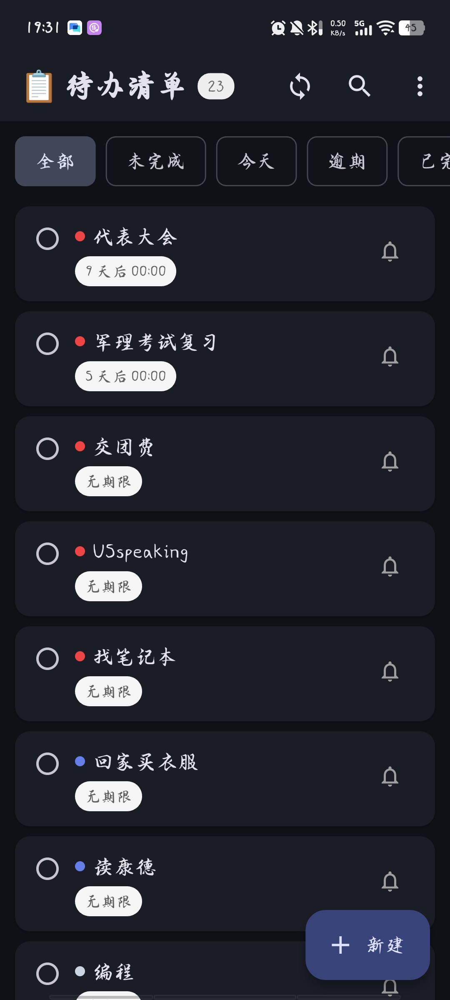
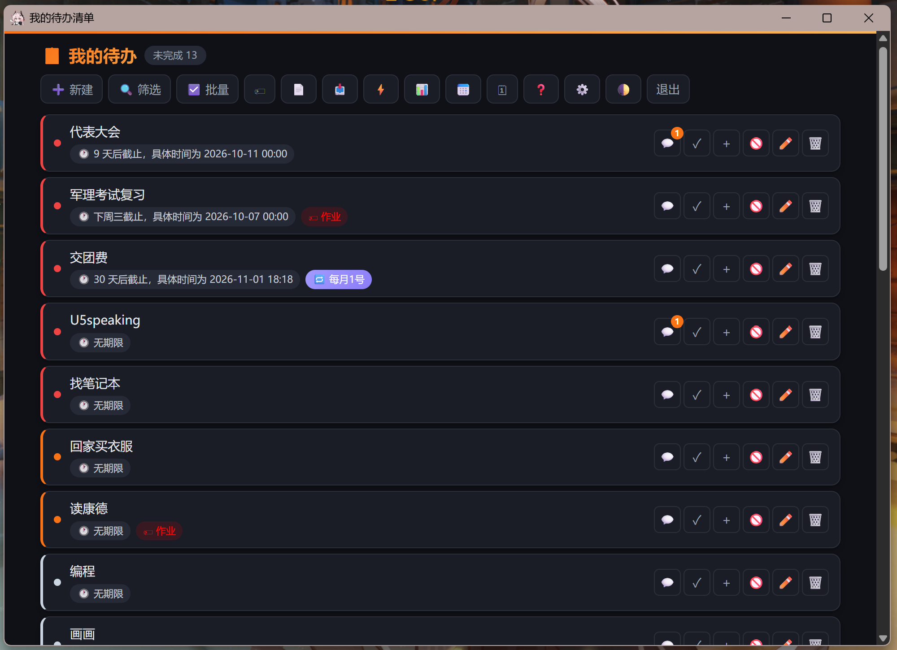

极简、高效、跨平台的任务管理工具。支持手机与电脑实时同步。
唯一优点是：没广告。
基于 Flutter 构建，支持 Android、iOS、Windows、macOS。随时随地，无缝切换。
专注任务本身，没有任何弹窗、横幅或推荐。还你一个干净的清单。
启动迅速，体积小巧。不占用系统资源，帮你快速记录每一个待办事项。

移动端体验

桌面端体验
选择你的设备，开始高效管理任务。
TodoApp_Android_1.5.4.apk 保存到手机。TodoApp_1.5.4_win64.zip。D:\TodoApp 这类纯英文路径）。TodoApp.exe 就能用，不用安装、不写注册表。TodoApp.exe → 发送到 → 桌面快捷方式。安装包托管在 GitHub Releases。若直连慢，可复制下载链接到任意下载工具（如迅雷、Motrix、wget）里跑；或用手机热点换个网络再试。
正常。这是独立开发者未做付费代码签名的通用提示，不是病毒。Windows 端请点「更多信息 → 仍要运行」；若仍不放心，可用杀毒软件扫描后再运行。
可以。Android 直接装新 APK；Windows 解压到新文件夹即可，两边数据都各自保留。建议升级前先在 设置 里做一次备份/同步。
可以，在同一局域网下通过 设置 → 同步 配对即可；两端都支持手动/自动同步同一份任务数据。
* v1.5.4 主要更新：提醒提前量可用分钟 / 小时 / 天，单条任务还能单独设；桌面通知以 TodoApp 自己的身份弹出 （不再显示 Windows PowerShell），测试通知真的会弹；裁剪可整屏全屏，修好四角把手消失与「铺满」预览 错位，「输出缩放」改名「输出尺寸」并实时显示输出像素；换版本同步不再丢任务。